Station S16b — the tape cell and the one hover label
6 Oct 2026 · branch station/s16b-tape-cells-20261006 · not deployed · pictures from a hidden browser at 1680 × 1050
1 · The tape cell
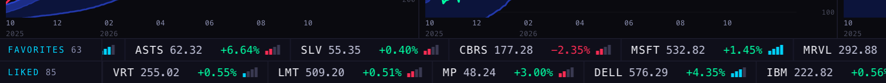
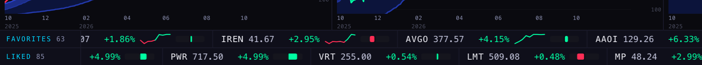
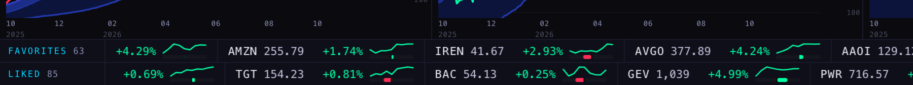
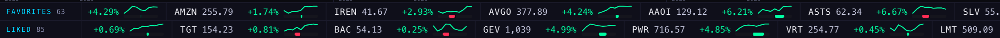
2 · The hover — label count
| Chart | Pointer height | Live: labels | S16: labels | S16b: labels | S16b: what the one label says |
|---|---|---|---|---|---|
| XLI | high | 2 · one of them off the pointer's level | 1 · on the pointer's level | 1 · on the pointer's level | 181.05 over +5.23%, 0.5 px from the pointer |
| XLI | middle | 2 · one of them off the pointer's level | 1 · on the pointer's level | 1 · on the pointer's level | 169.70 over −1.37%, 0.4 px from the pointer |
| XLI | low | 2 · one of them off the pointer's level | 1 · on the pointer's level | 1 · on the pointer's level | 155.83 over −9.43%, 0.5 px from the pointer |
| XLI | exactly on the current price | 2 · one of them off the pointer's level | 1 · off the pointer's level by 14 px | 1 · on the pointer's level | 172.05 over −0.00%, 0.5 px from the pointer |
| ESUSD | high | 2 · one of them off the pointer's level | 1 · on the pointer's level | 1 · on the pointer's level | 7,670.51 over −2.82%, 0.5 px from the pointer |
| ESUSD | middle | 2 · one of them off the pointer's level | 1 · on the pointer's level | 1 · on the pointer's level | 7,207.27 over −8.69%, 0.4 px from the pointer |
| ESUSD | low | 2 · one of them off the pointer's level | 1 · on the pointer's level | 1 · on the pointer's level | 6,641.09 over −15.9%, 0.5 px from the pointer |
| ESUSD | exactly on the current price | 2 · one of them off the pointer's level | 1 · off the pointer's level by 16 px | 1 · on the pointer's level | 7,893.25 over −0.00%, 0.5 px from the pointer |
XLI · pointer high
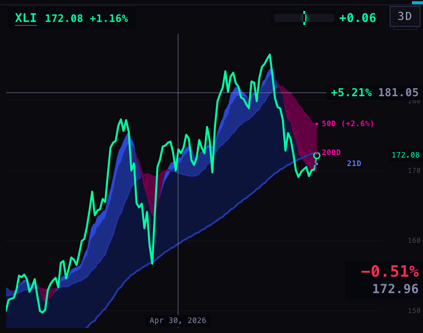
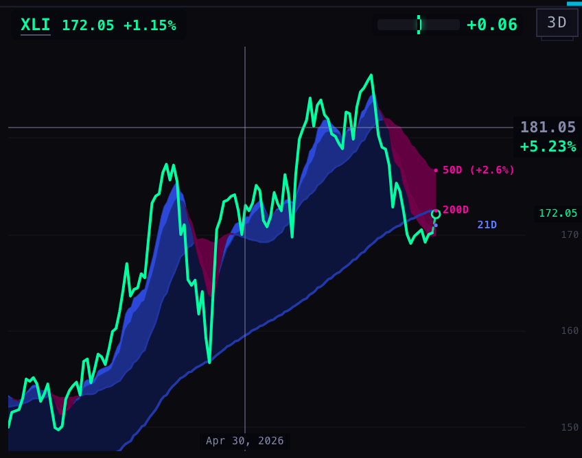
XLI · pointer middle
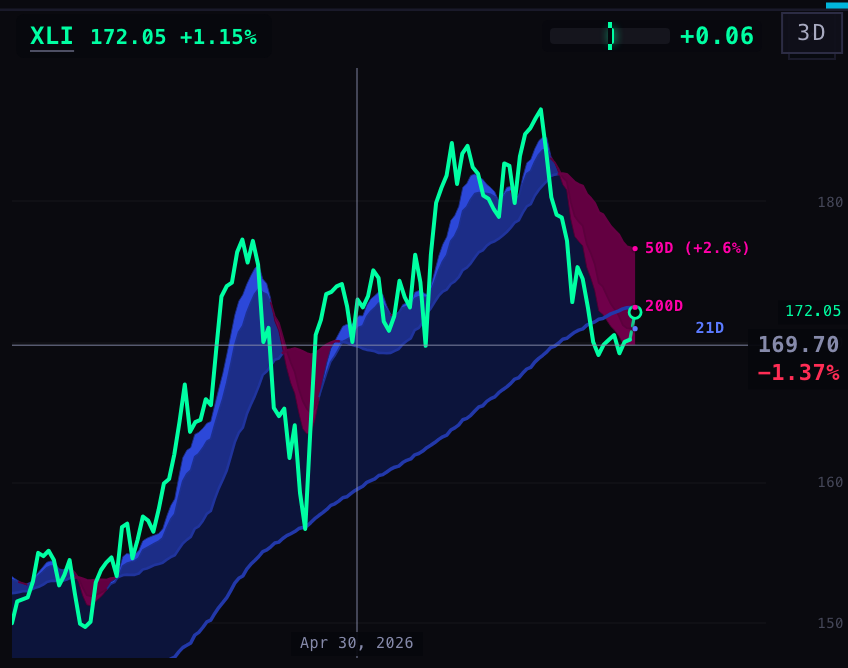
XLI · pointer low
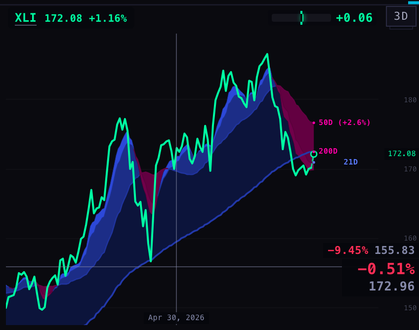
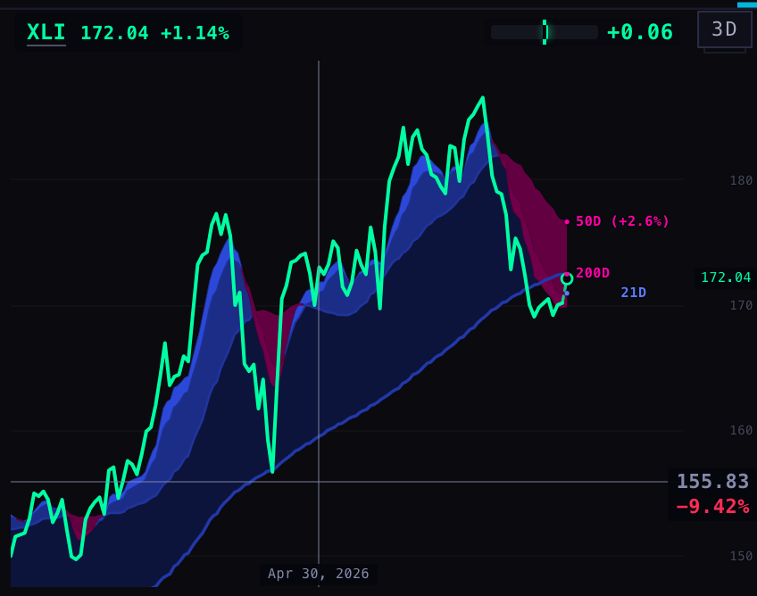
XLI · pointer exactly on the current price — where S16's label still left the line
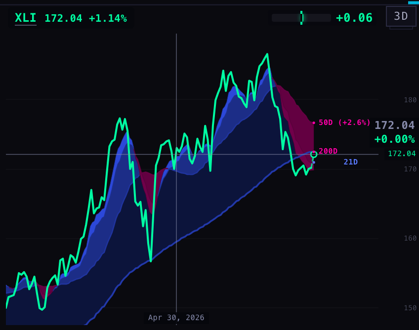
ESUSD · pointer high
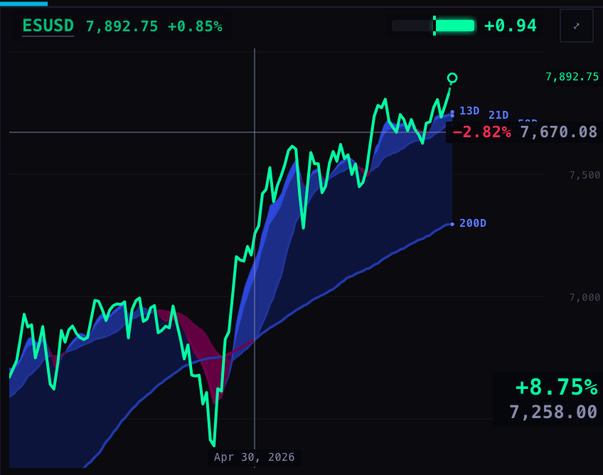
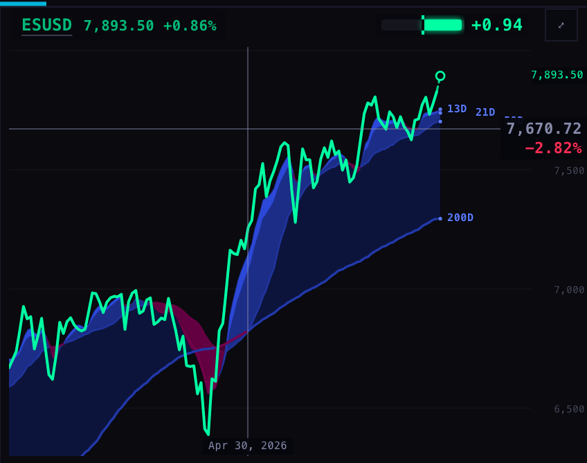
ESUSD · pointer middle
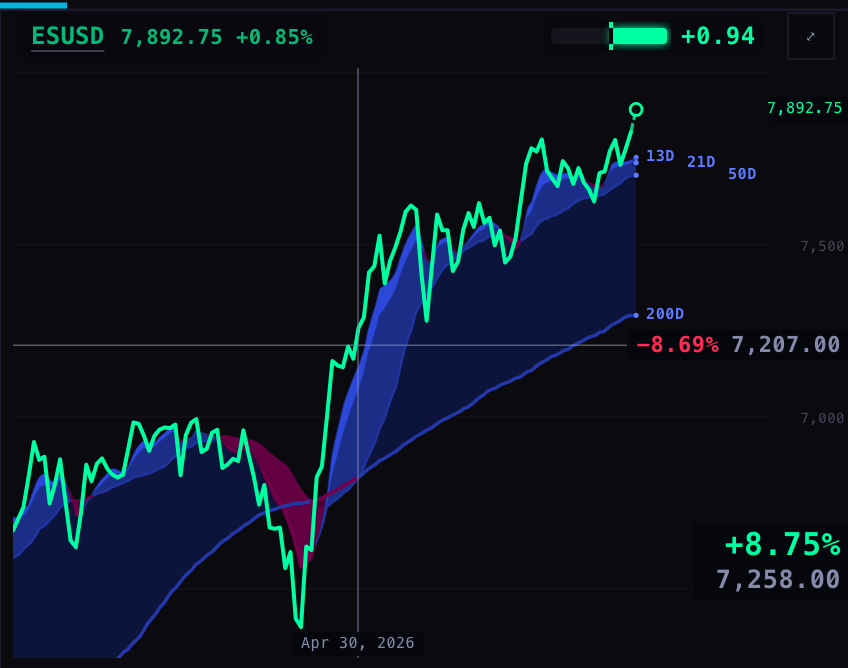
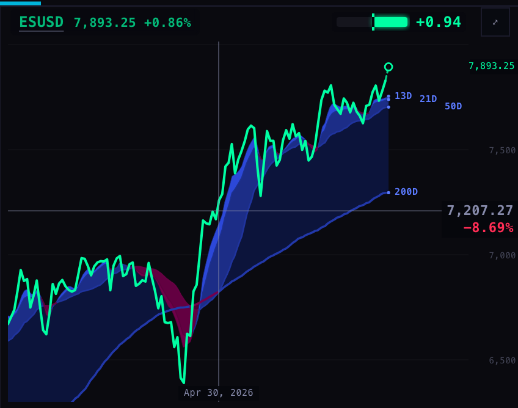
ESUSD · pointer low
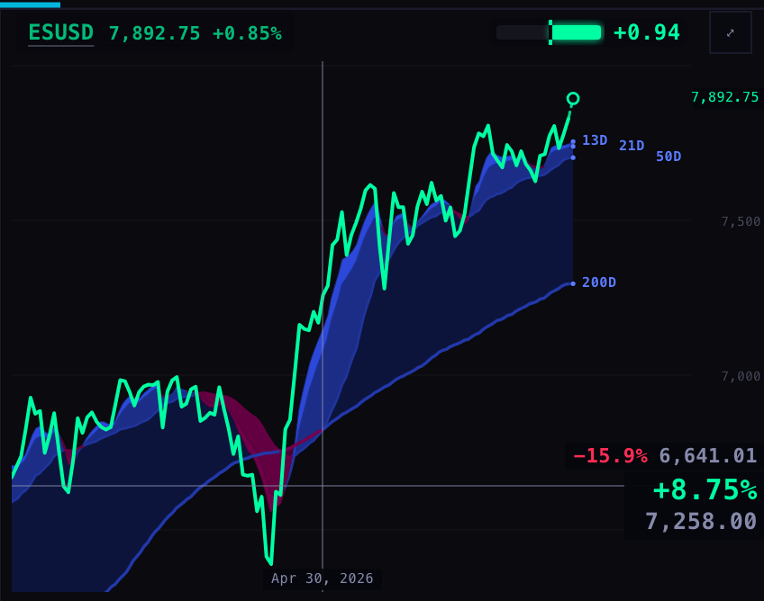
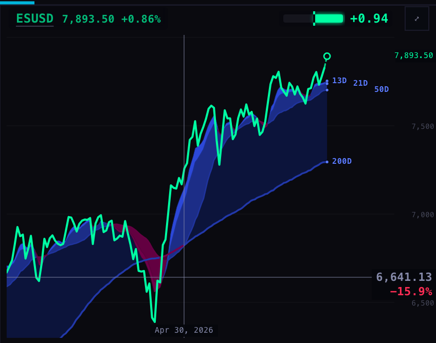
ESUSD · pointer exactly on the current price
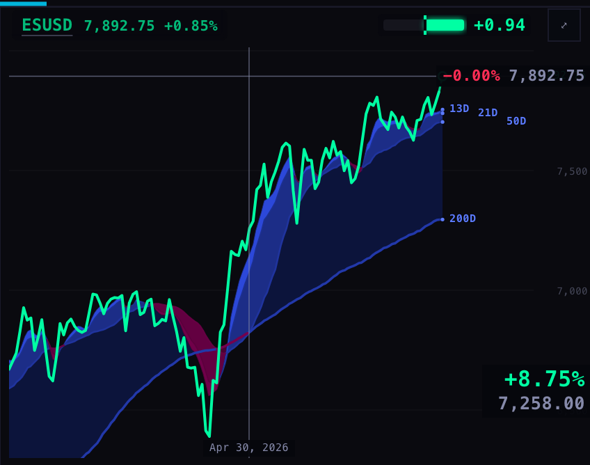
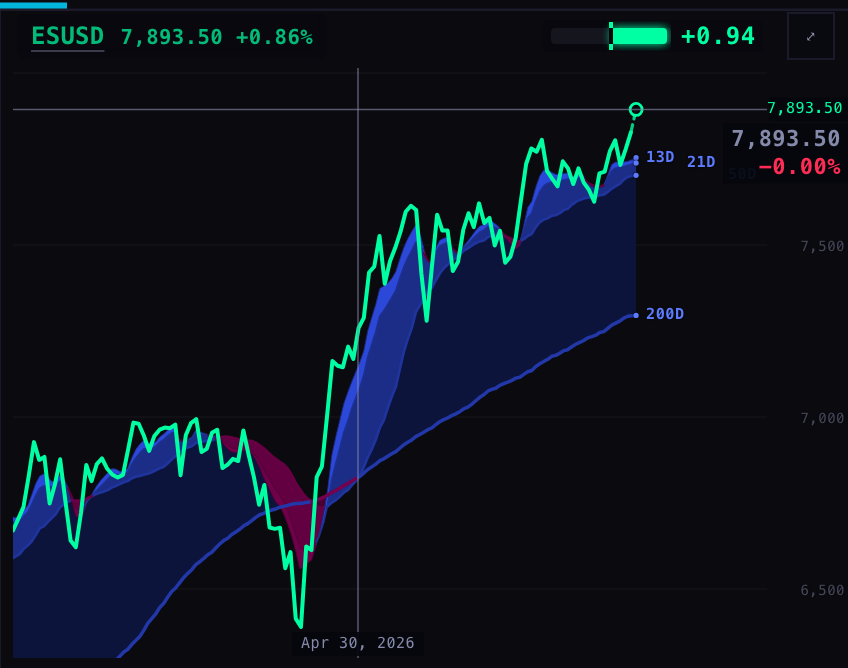
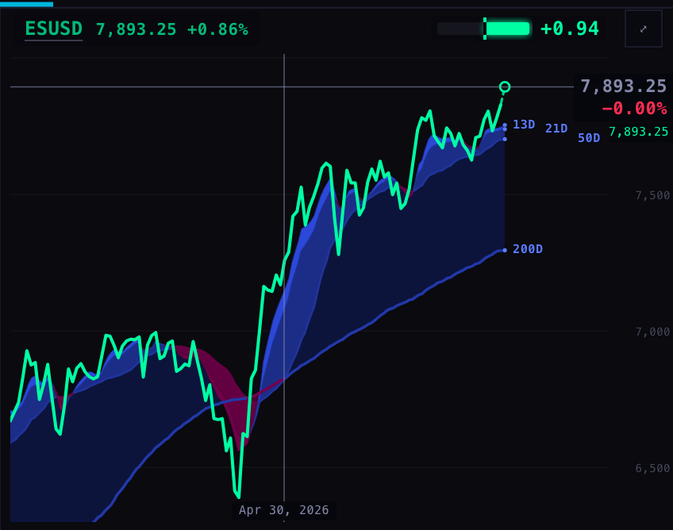
3 · The whole deck, pointer on XLI
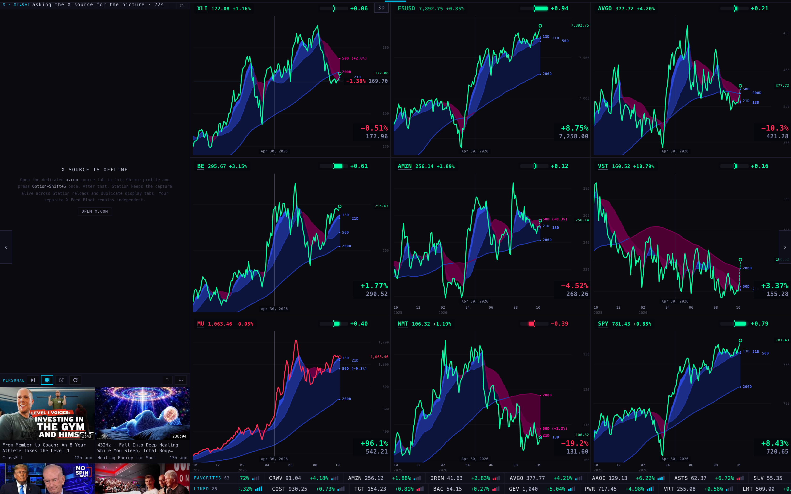
Pointer on ESUSD
PAGE SPECS
- The tape cell. Ticker, price, percent, then one mark 44 px wide: today's price line (44 × 11 px) and, 1 px under it, the Geiger bar as a 4 px strip of the same width. The row is still 22 px and the strip of two tapes still 46 px — the size Alan liked. Measured on the page: bar under the line and same left edge and width in 63 of 63 FAVORITES cells and 85 of 85 LIKED cells; a line drew in 63 and 85.
- The price line is today from the 09:30 New York open, in 15-minute steps. It is one colour, the day's: green when the name is up on the day, red when down — the sign of the percent beside it. (S16 cut it green above / red below the open, and 31 of its 63 lines disagreed with the percent next to them.)
- The Geiger bar is the Station's own, the one beside every chart's name: zero in the middle, green growing right for a positive reading, red growing left for a negative one, full half = a reading of 1. Its colour follows the Geiger reading, not the day's price move, so the same name never shows two colours for one reading on the tape and on its chart. It is not volume.
- Cell width. About 199 px on FAVORITES and 195 px on LIKED (live: 170 and 166; S16: 238 and 189).
- The stray hover label was the corner box: fixed in the chart's bottom-right, showing the price on the hovered date and the percent from then to now. It did not sit on the pointer's level. S16 removed it from the chart under the pointer. S16b fixes what was left: when the pointer was close to the current price, S16's label jumped about 15 px off the pointer's line to avoid the small current-price marker. Now the label always holds the pointer's line and the marker steps aside.
- How the labels were counted. Not from the page's own notes: every piece of text the hover layer was asked to draw was recorded and read back with its position. A label is a percent plus its price that appear only while the pointer is on the chart. On S16b the hover adds exactly three texts on XLI and ESUSD at every height: the price, the percent under it, and the date at the bottom. The only other percent on the chart is the name badge at the top left, which is there with or without the pointer.
- Other charts while you hover one still show their corner box (their price on that date, and the percent since) — one label each. That is S16's open question for Alan and is unchanged here.
- Where the numbers come from. Prices and percents: the chart service's quotes, as before. Lines: the chart service's 15-minute bars, one read per 40 names every five minutes (four reads for 148 names; S16 read FAVORITES only, two reads). Geiger: the same readings the charts use.
- What could be wrong. A reading near zero gives a very short bar at 4 px tall (XLI at +0.06 is about 1 px). Before 09:30 the line is the day's bars so far. A percent of −0.00% prints red (it was so before this work).
- Not done. Nothing is deployed. Phone (no tapes there), touch, theatre and charts-only were not pictured. The X pane is offline in a hidden browser.
- Tests. Whole suite at the repo root: live 1062 tests / 28 failing names; S16b 1077 tests / the same 28 names, none new, none gone (lists in harness/failing-names-*.txt).